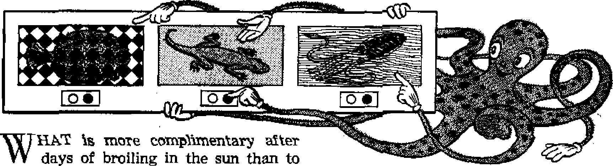

Man’s stairway to the stars
Controversy concerning courts and constitution
John Huss and the Hussites When free worship broke from tyranny and Rome’s anger blazed against its champions
--
"Too little too late the Bible warns
THE MISSION OF THIS JOURNAL
New* sources that ore able to keep you awake to ths vital 1mu«« of our times must be unfettered by ceiHorahip and selfish interests. “Awake [" has no fetterfl. It recognizes facts, faces facts, is free to publish factfl. It la not bound by political ambitions or obligations; it is unhampered by advertisers whose toes must net be trodden on; it is unprejudiced by traditional creeds. This journal keeps itself free that it may speak freely to you. But it does not abuse its freedom, it maintains integrity to truth.
“Awake T* uses the regular news channels, but Is not dependent on them. Its own correspondents are on all continents, in scores of nations. From the four corners of the earth their uncensored, on-the-scenes reports come to you through these columns. This Journal’s viewpoint is not narrow, but is international. It is read in many nations, in many languages, by persons of all ages. Through its pages many fields of knowledge pass in review—government, commerce, religion, history, geography, science, social conditions, natural wonders—why, its coverage is as broad as the earth and as high as the heavens.
“Awake I” pledges itself to righteous principles, io exposing hidden foes and subtle dangers, io championing freedom for all, to comforting mourners and strengthening those disheartened by the failures of a delinquent world, reflecting sure hope for the establishment of a right* eous New World.
Get acquainted with “Awake 1” Keep awake by reading “Awake 1”
Pcblibhrd Semimonthly Bt TyATCHTOWBttl BIB LB AND TRACT SOCIETY, INC.
11? Adams Street
N. H. Ksoaa, President
Printing this issue: 07$,000
LtMmgti tri wfrivfc tfrfc Mifiuia* fe ptofalwi:
S«iijinjuntLly—AMkfl^a, English, Finnish, French, German, HollandHh, Norwegian, Spanish, Swedish, Monthly—Danish, Greek, ForUicueae, Ukrainian,
OHIch feiriy eniiBCripttoa Hate
AimiHbs. U.S., 117 Adams St., Brooklyn 1, N.V, $1 AnitraUt. 11 Beresford IM, Strathfleld, NAW. Ma Cantril, 40 Irwin Ave., Toronto 5, Ontario $1 Eailwd, 34 Craven Terrace, London, W 2 7a {taitll Mrit*, Private Rif. P.O. Elands! do Mln,
Transvaal *' fa
r.nwnd as sMmd-class matter at Brooklyn, N. Y
Brooklyn 1, N. Y., U. S. A. Grant SuITbe, Secret am
Five cents a copy fffitfttCMtt eftemid be nttt to office in roar cotEntry in compliance with regulations to EWaDter delivery of money. JMiniltanees are accepted at Brooklyn front countries where no office is foratai. by inUniatlofial, money trdef only, Subacrlptlun ret«a in different countries are here stated in iocs; currency. Kot Ice <rf expiration (with renewal blank) la lent at least two Issuer before subscription expiree, Chino* if *4tre» when sent to our office nuty be expected effective within one mouth. bend your old a w#jj es new address.
Vt of March 3. 1879 Priced In U. 3 A
CONTENTS
Reprimand for Presidential Draft
Tiny Shrew Boasts Own Mosquito Net
Our Atmosphere, Man’s Stairway
Blame the Troposphere, Not
“War of the Worlds” in Ionosphere
Does Electrical Ring: Threaten Us? 12
Constitutional Crisis in South Africa 13 John Huss and the Hussites
Push-Button Skin Color for Animals 21 Catholicism, Source of Bigotry
"Your Word Is Truth”
What About Deathbed Repentance? 25
Church Deal Neta City Big- Loss
Vglujm» XXXIII Brooklyn, N. Y,, July 8, 1952 Number 13
United States District Judge Matthew M. Joyce on Novem-ber 30, 1951, acquitted a young AOS' pioneer minister of Jehovah’s witnesses charged with refusing to submit to induction.
Keith Glessing had filed his questionnaire as required by law. His questionnaire showed he was a pioneer minister of Jehovah’s witnesses devoting the required 100 hours a month in active ministry. To sustain himself in the ministry, he worked 40 hours a week with the Minnesota Mining and Manufacturing Company. In addition to his door-to-door and street preaching he was an assistant to the presiding minister of a nearby congregation.
The local board, the Minnesota Appeal Board, and the Presidential Appeal Board at Washington denied him classification as a minister and placed him in Class 1-A. When ordered to report for induction, Glessing went through the necessary physical examinations and gave the induction officers the necessary information that they required as to his status. When Gless-ing’s name was called during roll call at the induction center, he refused to step forward, and he was indicted and prosecuted.
On November 30, 1951, Glessing was tried before Judge Matthew M. Joyce of the United States Court at Minneapolis. At the conclusion of the testimony the
United States attorney made an impassioned appeal to the court to condemn Glessing as a faker. He argued that Gless-ing’s vocation was not the ministry, but was his secular employment with the Minnesota Mining and Manufacturing Company. Hayden C. Covington, counsel for Jehovah’s witnesses, pointed out that the apostle Paul was a tentmaker and that throughout history ministers had worked to support themselves in secular employment, and he condemned the finding of the Presidential Appeal Board as arbitrary.
Following the arguments Judge Joyce rendered his decision. He introduced his decision by saying to counsel: “You have supplied me with material, information and knowledge which I think will be of benefit to me always." Rejecting the sharp criticism of the youthfulness of Glessing by the draft boards and the United States attorney, he said: “It seems to me that this young man as I observed him on the witness stand, and heard what he had to say, he is an exceptional character. For his age he talks with maturity of one twice his age.’’ The judge pointed out that William Pitt “wasn’t 21 yet, when he was Prime Minister of England, and I don’t think that history has ever recorded a greater one than he was”. Judge Joyce condemned the local board for its refusal to hear three witnesses that Glessing brought
to the board, saying: “Why this board did not hear these three witnesses that the1 young man brought in, I don’t know.” The court rejected the government’s argument that performance of full-time secular work destroyed Glessing’s claim that the ministry was his vocation. Judge Joyce stated:
“In my own life I have known orthodox members of the various religions in Iowa, where I was reared, whose returns from their parish flocks were such that they had to engage in secular vocations, and did, and so raised their families. And I don't think that the mere fact that he had to eat, that he had to support himself, rather than be dependent upon his parents so to do, should operate to his prejudice here now.” He condemned the local board for refusing to give Glessing a full and fair hearing. Said he, “It doesn’t seem to me that it istquite the American way to slap down a man and say, ‘We won’t hear you at all about this thing.’ He was there; he was earnest; he was trying to get his story to the board.” The court criticized the government for failing to bring the members of the local board to bring testimony before it instead of merely calling the clerk of the board to identify the papers. “I should like to see them, particularly in view of the fact that the issue of credibility was involved and I should like to have heard them. I should like to have seen how they acted and observe their demeanor or conduct on the witness stand,” said Judge Joyce.
Referring’again to the fact that the local .board had rejected the three witnesses, he remarked: “I haven’t any doubt that there was new material that could very properly have been submitted by these witnesses whom he brought there, and it was the denial of that opportunity and the apparently summary manner in which he was denied the opportunity to point out what he thought was a legitimate mistake that brings me to this conclusion.”
In his closing remarks the judge said: “I am not satisfied that the Government has carried its burden to prove this defendant guilty beyond all reasonable doubt.” Thereupon the judge concluded the entire proceedings, rebuking the local board, the Minnesota Appeal Board, and the Presidential Appeal Board by a finding of not guilty, thus vindicating the stand of this youthful witness of Jehovah, who properly fulfilled his 100-hour-per-month requirement and supported himself on the side by secular work.
Following the trial a letter of complaint was written to the Presidential Appeal Board regarding the false requirement of 120 hours, which apparently the board was applying to all cases of Jehovah’s witnesses, informing the board that the true requirement of full-time ministers is 100 hours per month. National Headquarters of the Selective Service System replied:
“In determining whether an individual registrant is entitled to classification as a minister, it is naturally a very relevant inquiry to ascertain how many hours the individual devotes to his ministerial work. But the time devoted is only one of numerous circumstances and in our opinion granting or denying classification as a minister should not be made to depend exclusively upon the number of hours the individual devotes to his alleged ministerial activity.”
While hours alone are not the major factor, still each pioneer registered with the draft boards ought to be able to show that he actually is devoting 100 hours per month to missionary work and many, many more hours to preparation of public talks and his other ministerial activity.
Draft boards and appeal boards would do well to reconsider their thinking in the future to avoid the disgrace to themselves as administrative officers of being assailed by a federal judge as unfair.
SWITZER
LAND
AUSTRIA
YUGOSLAVIA
HUNGARY
en his hand against Russia, Now the Allies are in a most embarrassing posi
tion in that they are committed to give Trieste to Italy and yet to do so would
By "Awake I1' correspondent In Italy
IN THE uneasy cold war between the East and the West, one of the many cancerous growths and sore spots agonising the life of this world is the Free Territory of Trieste, Because of its strategic location it has been a controversial prob-
lem among the Allies since they occupied it in 1945, and it has occasionally threatened to be cause for a hot war. It is a potential threat to world peace. Recent riots in Trieste were a forceful reminder that the problem of Trieste is still unsolved, forcing it again into the limelight of international politics, A quick sketch of recent history wilt enliven our appreciation of the issues involved.
In April 1945, the greater part of the city of Trieste was-occupied by Marshal Tito’s forces from Yugoslavia. Allied troops entered the city the next month. Hostilities ended almost immediately. Forty days later a vast area of Italian territory around Trieste was divided into Zone “A”, under British-American administration, and Zone “B”, to be administered by the Yugoslavs. With slight alterations this division continued after the signing of the Italian Peace Treaty on September 15, 1947. The Italian territory was constituted a free territory under a governor to be appointed by the United Nations Security Council. Thus the Free Territory of Trieste came into being.
The existing situation added a few more “knots” when, in June 1948, Marshal Tito broke with Stalin. The Allies began to court Tito’s favor. In time military and financial aid was given to Tito to strength-offend Tito. To make matters worse, relations between Italy and Yugoslavia are none too good because of this question of Trieste, as both claim to have a right to her. The Allies have tried to have Yugoslavia and Italy negotiate together in order to work out something agreeable to the two. Italy, however, insists that negotiations start on the basis of the 1948 Allied declaration, while Tito has made several of his own proposals but now asks for a free territory as originally agreed.
Russia is taking advantage of this knotty problem and every so often pulls out the problem of Trieste during international discussions. She charges that America does not want to reach an agreement, as America is building up a military base of aggression against her. This charge seems to be without basis. Russia also has tried to tie the problem of Trieste together with the peace treaty of Austria, since it once (in pre-World War I days) was the chief Austrian port. The issues become more involved, while the tension between the two blocs mounts higher and higher.
Commercial and Industrial Life
The strategic value and importance of Trieste should not be underestimated. The city has a modern deep-water port wbkib is the natural outlet for trade from Central
Europe and the Danube river basin. It is now one of the busiest ports on the Mediterranean sea, handling more traffic today than at any other time in its history. To further increase port facilities a new port area is being constructed which will include a navigable canal about thirty-nine feet deep, permitting sea-going vessels to enter the heart of the industrial port. The shipyards make up the principal industry. Between the two world wars these shipyards built fifty-two per cent of all the ships constructed in the Italian shipyards.
Also tn Zone “A” are a steel mil] and two refineries, one of which before the war supplied all the lubricating oils needed by Italy. There is a large merchant marine operating from this port as well as a large fishing industry. Grape culture predominates in the agricultural field, with grains, vegetables, fruits and nuts being produced. The city is the focal point of three railway systems and many minor industries.
For seven years now the Free Territory of Trieste has been occupied by these powers, without arriving at any conclusion on the problem as to how it should be ruled. Hence on March 20,1952, the fourth anniversary of the Allied declaration, patriotic meetings were planned by the people of the city of Trieste to affirm their desire to return to Italy and to protest Yugoslav persecution of Italians in Zone “B”. Two gatherings were authorized by the Allies for this day.
A short distance from the Teatro, where the mayor and other local officials were giving talks, crowds began to gather with their Italian flags to hear the patriotic music that was to be played by the National League band. But before the band began to play trouble began to brew. Streets were blocked. Hundreds of police swarmed down on the Unit Square to keep order. Crowds began to heckle the police. A young man was arrested. More jeers and heckling. Trucks with firehoses were called out to help sweep the square clear of the crowds. Police mounted on horses and motorcycles swung into action. Billy clubs were being used. All Allied troops were ordered into their barracks.
The next day the local government protested energetically to the British military commander, General Winterton. They accused the police of attacking peaceful and harmless citizens gathered at authorized meetings, and this for no reason at all. The local government declared that all cooperation between the two governments would be suspended until satisfaction was given to the people for the brutal attacks by the police. The local unions called a general strike to protest the police action. Rioting again began to break out in the downtown sections. This time more of the populace was involved. The mobs momentarily forgot their hatred of Tito and hurled all their fury against the English, as they are the ones in command in the zone. Mobs carried placards denouncing the English. Crowds shouted invectives. Cars were overturned. Windows smashed. More riots broke out. Greater numbers surged through the streets. Rocks, guns and tear gas went into action. Finally the mob spent its fury and an uneasy calm settled over the battle-scarred city.
On Sunday morning more demonstrations began forming in the center of the city, but these were soon broken up. Many were the injured and the arrested as a result of these demonstrations. It is to be noted that this was the first time that the local populace had engaged in riots against the military government, although they had often been incited by the extreme elements to do so. The fact the demonstrations seem to be supported by the people would indicate that many want Trieste to be returned to Italy- It is hard to sustain, as charged by some, that these riots were caused by the fascists. It can be said, though, that there were elements of the right and the left mixed in among the crowds that took advantage of the situation to grind their own axes.
The reaction of Italy to these demonstrations in Trieste was spontaneous. In many Italian cities mass meetings and demonstrations were held demanding the return of Trieste to Italy. In most cases the gatherings were peaceful. However, in Rome and Naples these degenerated into riots and street fighting, with hundreds being arrested. Demonstrations continued in Rome for over a week. Also, the Italian government of Rome took up the matter with the American and English governments. As a result of these diplomatic conversations, the Allied governments have agreed to allow the Italian government to have a share in the administration of Zone “A”. The extent, and details of these arrangements will be worked out by meetings in London. A further concession to the Italians was the announcement that local elections, which had been postponed for nine months, would be held at the same time and with the same system of elections to be held May 25 in Southern and Central
Not to be outdone by the Italians, the Yugoslavs organized mass meetings and demonstrations of their own in Belgrade and other cities. No rioting was reported during these demonstrations. Heightening the tension, however, was a threatening talk by Marsha] Tito himself, who refuses to recognize any unilateral action by the Allies allowing Italy to enter into Zone “A”. He further warned that if the Italian army was allowed into Zone “A” and left there alone, there would be “fireworks’*. He cautioned the Allies that if they conceded to Italian demands they would lose Yugoslav friendship.
So within a period of fifteen days the problem of Trieste was aggravated and threats of war were raised. It is thus evident that the concessions to Italy by the Allies have by no means solved the problem of Trieste. In fact, the Italians are still shouting for Zone “B”. The concessions may possibly make the present unsatisfactory division of the Territory of Trieste a permanent partition. Then, too, there is yet to be heard the reaction of Russia to these concessions, hy the. ALbes,, w. view of the original agreement made in the Italian peace treaty.
Whatever may happen, let those that seek justice, peace and freedom not look to the powers of this world to solve present world problems and woes. Often their solutions create more problems than they solve. Do not be disheartened by this, but look to the Great Liberators, Jehovah God and his King Christ Jesus, who will soon make the whole earth a free territory for men oi good wiH to Tive on in peace and happiness. Christ Jesus will clear this world of all these nationalistic problems by the fast-approaching war of Armageddon and thereafter unite all mankind under his theocratic government.
Tiny Shrew Boasts Own Mosquito Net
<[ A Science Service bulletin tells of a tiny Malayan tree shrew added to the Smithsonian Institution that seemingly carries its own protection from mosquitoes.
The bulletin reports: “The netting is an extension of its three-in ch-long naked tail and looks exactly like a feather. When the creature sleeps it twists its tail around to. that the leather ttmra tta lieft. ’ne'fieve, may serve to protect
it against mosquito bites.”
Stairway to the Stars
THE sky is a temptress that offers wayfaring man an enticing vision of the starlit vault beyond, then laughs at his attempts to reach it and knocks him back through a powerful ally, gravity. Today space-minded men speculate seriously on driving a hole through our sky and liberating a manned vehicle in outer space. They have climbed slowly, painfully, some of the lower steps of the layered gaseous staircase, the atmosphere about our earth. They have projected unmanned rockets to some of the higher levels, the “WAC Corporal” setting the record at the 250-mile mark.
But far from getting through the atmosphere, he does not yet even know its precise depth. At 120 miles air friction virtually ceases as a resistance factor; this could be one basis for drawing the line, but there are others. In the lower atmosphere about the earth nitrogen and oxygen are the air’s main constituents,1 and these gases appar-
ently hold this supremacy as high at least as the highest observed auroral displays at 700 miles, though at such altitude they are probably dissociated fromthe molecular to the atomic state. By still another gauge, air is compressible under its own weight, and about three-fourths of the atmosphere is pressed down beneath the peak of the highest mountain. The higher one goes the more rarefied the air, and we are told that extremely scattered air particles would likely be found at twice the auroral height or even thousands of miles out into space.
The layers of atmosphere can be thought of as the earth’s outer wrappings. The whole creative plan of earth reflects a spherical design. The planet’s core, thought by some to be gaseous or liquid; is called the centrosphere, the rocky shell, the lithosphere and the watery belt, the hydrosphere. Then from sea level to an average of seven miles up (ten at the equator, five at the poles) is the first atmospheric steppingstone, the troposphere. It leads into stage two, the stratosphere, which, at about sixty miles out, gives way to the ionosphere. At any point from 120 miles on out different authorities are likely to begin the exosphere, an area of extremely rarefied atmosphere that links the ionosphere with outer space.
How, then, did our atmosphere originate? The planetesimal theory for the origin of the solar system holds that at first the earth was too small to hold atmospheric gases to it, but that as it grew by attracting other planetesimals the gases emitted from its interior were gradually retained. On the other hand, Laplace’s nebular hypothesis (also the modem ^Jeans' hyppth-esls) contends that the earth was originally a mixture of gases and that a once vastly thicker atmosphere has been finally reduced to the present one through cooling.2 These, remember, are but theories. Whether either or neither is correct, we have been given an atmosphere peculiarly suited to life that is unique among the planets and meriting closer study.
The atmospheric layer most vital to man is the first one, the troposphere, which clings so snugly to the earth and, below 20,000 feet, provides air that can be breathed without artificial oxygen supplies. It is said that the only thing consistent about the troposphere is its changeableness, a trait well known to the weatherman, since it makes his work a difficult and, as we know, thankless task. Any mention of weather automatically limits discussion to the troposphere, because only in the troposphere does weather exist. Now what is weather? One unique definition was given it as "the mood of the atmosphere”—it is a mood that involves various elements, such as air temperature and pressure, the winds and atmospheric moisture.
Insolation,, the receipt of solar energy, warms the various parts of the earth in relative degrees, depending upon the angle at which the rays strike and the length of time they are granted exposure. It is estimated that about 45 per cent of the total solar energy aimed at the earth gets to the surface. Forty per Cent is deflected by dust and cloud particles and another 15 per cent is absorbed directly by the atmosphere. Then, 10 per cent of
the energy actually received is immediately reflected back and lost. The most important phase of atmospheric heating occurs after the earth’s surface has been heated and it responds to the law of physics that any substance possessing heat radiates heat waves in direct proportion to its temperature.
This process, reradiation, is not to be confused with reflected waves. Reradiation by heat already absorbed by the earth continues during the night. Also, these earth heat rays are much longer than the sunrays and thus do not pass freely through transparent substances. The atmosphere absorbs and retains them. The sun’s short rays are let easily into our domain, then held captive so that the atmosphere can insulate us against excessively dropping temperatures. This principle is commonly known as the ‘‘greenhouse effect”.2
Varied air-pressure belts shift seasonably, making their contribution to the weather. The over-all sea-level atmospheric pressure is about fifteen pounds per square inch. Dense cold air makes for high pressure, moving downward, spreading laterally at the earth’s floor. Lighter, warm air ascends to the upper troposphere, where it spreads laterally, leaving lower pressures beneath it on earth. From this simple cycle one can easily see the plan for natural air circulation. Wind is but the drift of air from a higher pressure area to a lower one.
Finally, note the role humidity plays. High air temperatures will accommodate much water vapor, low temperatures little. The relative humidity refers to the per-
* See Physical Geography, Strahler, p. 282, and Between Earth and Sky, A Piccard, chapter 4.
centage of vapor present at a given time in proportion to the total amount that air at that particular temperature will hold. By increased evaporation or by lowered temperature this relative humidity can be stepped up until the saturation point is reached. Then further cooling results in condensation to liquid form of the excess vapor. Clouds are simply made up of tiny drops of water or ice crystals that have formed around dust particle nuclei. Fog has been described as a type of stratus or layered cloud, closely hugging the ground. When, within clouds, rapid condensation occurs, then at different temperatures the various forms of precipitation can take place—rain, sleet or snow.
Dust particles, native to the troposphere, in their further vital capacity as light scattered, make daylight what it is to us. The finest particles can reflect only the light of shortest wave length, the blues and violets. The coarser particles, found nearest the earth, reflect all but the longest wave lengths, the red. During midday, the sun, directly overhead, sends its rays to us in a perpendicular line, contending with the minimum of dust-laden lower air. The blue rays alone are scattered, bolting out in every direction, some turning earthward and painting our heavenly arch in blue.
But by approaching evening, when the sun is near the horizon, its rays must penetrate much more of the dust-filled troposphere. All rays but the reds are scattered out, fewer and fewer of the blues reaching earth as the declining sun’s light is forced to penetrate through increasing amounts of dust. By sunset the orb of the sun as well as the western horizon is crimson. The grand finale occurs with the beautiful reddish twilight left behind after the sun has disappeared from sight. The higher one goes the less dust there is to perform this diffusion of light and the darker the sky grows, from violet to purple, to black.
Talk of climbing higher next brings us logically to the second great atmospheric layer, the stratosphere. We were correct in calling the troposphere the area of weather—as we know it—and to compare with the troposphere, the stratosphere is a peaceful paradise. Still, modem research has disclosed much more variation in our neighbor layer than was formerly believed to exist. Nacreous (mother-of-pearl type) clouds can be encountered at about thirteen or eighteen miles, and noctilucent clouds at about forty to fifty-five miles, observed after the sun has set. Upon entering the stratosphere a stable temperature of -67 degrees is met, but this soars, higher up, in a zone that reaches 170 degrees above zero, after which it falls again. Early in the stratosphere a 5,000-foot-deep thread of fierce wind whips around us at about 200 miles per hour. Above that, instruments record a blanket containing 100 per cent water vapor saturation.
Why now does one area of the stratosphere attain such a high temperature as 170 degrees Fahrenheit? Because of the existence there of a layer absolutely essential to life on earth, the ozonosphere. Current calculations figure it at ten miles thick, extending from the twenty- to the thirtymile level.3 Ozone (OJ is oxygen with three atoms to the molecule instead of the normal two and is produced through the operation of solar ultraviolet rays upon atmospheric oxygen. Its great importance to us lies in ozone’s ability to absorb this solar radiation, letting just enough get through to benefit life on earth. If these ultraviolet rays were not thus filtered and had a clear target of us, we would quickly find our ‘place in the sun’ untenable, and we would perish.
Passage through the ozonosphere would place a space traveler “beyond the veil” of protection in which the earth is hedged. In the remaining technical limits of our atmosphere beyond that point (past about thirty miles’ altitude) the sun’s ultraviolet rays and other cosmic rays from space have free rein. The result might be termed a “war of the worlds”* in which the tremendous energies of these rays from the outside universe are unleashed on the atoms of our rarefied upper atmosphere. This bombardment is described by J. Gordon Vaeth in 200 Miles Up, as follows:
“Solar ultraviolet radiation bombards the air atoms and molecules of the rarefied upper atmosphere. As a result of this, many atoms and molecules lose electrons and become positive ions. The resultant supply of free electrons is in part captured by other atoms and molecules which assume the character of negative ions. As a result of this loss and gain of electrons by atoms and molecules comprising the upper air, regions are created which are characterized by an unusual abundance of free electrons and ions, and these regions are the layers of the ionosphere? ’—Page 28.
Cosmic radiation, while not producing so potent an ionizing effect, brings with it fabulous energies measured in literally billions of electron volts. Its collision with upper atmospheric atoms, in the words of the writer just quoted, releases “protons, neutrons, electrons, positrons, gamma rays, and mesons of several types”. This sounds like a display that should make earth’s most astute atom-smashing scientists widen their eyes in sincere wonder. From the foregoing it should now be readily grasped that an Jon is simply a charged atom;* and the fact that in the ionosphere ionized layers form electrical fields about the earth interests us further.
These electrical layers are centers of the most dense ion concentration, and their names and approximate locations follow:
D layer E layer Fl layer F2 layer G layer (?)
35-60 miles f
55-65 miles
100-125 miles
155-215 miles
250-435 miles!
The everyday importance of these layers to man is their well-known ability to reflect radio waves back to earth, a theory first upheld by two men, Kennelly of the United States and Heaviside of England, in 1902. When it was finally accepted more than twenty years later, the lower portion became known as the Kennelly-Heaviside layer, and the uppermost part, as the Appleton layer, after its discoverer. Waves of low frequency (up to 500 kilocycles or 500,000 cycles per second) are reflected by the D layer. Standard broadcast waves of intermediate frequency (about 500 to 1,500 kilocycles) pierce the D layer but are handled by the E layer. High-frequency radio waves (from 1,500 kilocycles to 20 megacycles) are sent back by the Fl snd F2 layers. Only the ultrashort waves employed in radar can slip through all of the ionospheric layers to outer space, as was - — -*
* Such atoms have either lost an electron Co become positively charged by dominance of their positively charged nuclei or have gained a free electron to become negatively charged. Each atom is like a miniature solar system In structure with a positive nucleus of protons and neutrons balanced by an equal negative charge In the form of planetary electrons that swing around the nucleus —$00 Mites Up, pp. 28; Exploring the Upper
AJmoap&ere, Fisk, p. 73; The Air and Its Hot ley, p. 270,
t The D layer is thus found within an area assigned to the stratosphere Just above the ozonosphere. This Is because Its only slight Ionization is allowed to preclude it from ionosphere, which is considered to begin with the E layer,*-200 Afiies Up, pp. 11, 27.
t Though apparently confirmed in 194S the G layer Is regarded in doubt by authorities.
illustrated by the United States Army’s radar contact with the moon.
It would be grossly unfair to miss mentioning the stupendous glory of the ionosphere,4 its auroral displays, soma of which, as already stated, have been seen as high as 700 miles. The cause, long a source of dispute, is considered due either to excitation of gases exposed to bursts of solar electromagnetism or to bombardment of earth’s atmosphere by gas or some electrically charged particles from the sun, diverted toward our planet’s night side by its magnetic field, t
We now consider an unusual aspect to atmosphere study made necessary by the place in the stream of time at which we live. Today Christians can compare clear Bible prophecies with unmistakable fulfillments found in modern world affairs to prove to their satisfaction that the “accomplished ends of the systems of things have arrived”. They read further that the old system of rule and society is due to be ushered out in flaming destruction, that the old “heavens and the earth that are now are stored up for fire". (1 Corinthians 10:11; 2 Peter 3:7, New World Trans.) Then, with this Bible knowledge in mind, some have acquired enough scientific knowledge to learn of the ionosphere’s electrical layers. They have added this to a commonly known theory for the earth's creation^ which holds that a once molten earth threw off rings of matter during formation that subsequently swirled inward about the equator, moved poleward and finally deluged the earth in succession. A supposed final remaining electrical ring from this process they contend now is moving in on us to eventually wrap the earth viselike and become the Lord’s principal weapon at the universal war of Armageddon. Some, with their own personal ideas of chronology, conveniently time the ring's march to bring its arrival here at the right time to fit their theories.
It Is to be conceded at once that the ionospheric layers are by no means stationary, Readers will note above the variation in the zones of their intensity where they were listed. Says Vaeth: “The E and Fl layers, present in the daytime, dissipate at night, as does the D layer. The F2 layer retains its identity throughout both day and night but experiences an evidently considerable rise and fall.” He adds that the ionosphere’s description is subject to “day-by-day and hour-by-hour differences”. Still we are bound to note that never do these layers, indeed, never can they hope to leave the ionosphere that is named for them. Why not? Simply because of the ozonosphere which would absorb the ultraviolet and cosmic rays that cause the layers.
True, if something were to happen to this friendly ozone layer, man would be in for trouble were it not at once replaced. But it would be replaced—by the action of the ultraviolet rays upon the oxygen that creates the ozone. The rays themselves build up this layer that blocks their passage, so as long as the rays strike the atmosphere the layer will be there. The layer is the result of the rays, would not be there without the rays; it is not some independent barrier put there to block the rays. We are led to but one conclusion, that the electrical layers above us offer nowhere near the threat that the Idle rumors about them do that are uttered without scientific basis.
Will Armageddon, then, interrupt man’s efforts to rocket himself to the top of his atmosphere and on “out of this world”?* Whether it will or not is beyond the scope of this article, but if God-fearing man were
• Proponents of this idea took new heart with retease of news ttJis March that five monkeys and three mice had survived at an altitude of eighty miles wh^re they had been protected in V-2 and Aerobee rockets. Four of the monkeys perished of parachute failure on the return journey and the fifth filed of desert heat where It landed. The three mice came through the entire ordeal.
given a view of the universe from the remote exosphere, what then? Would not this unobstructed sight from atop his atmospheric staircase of the starry worlds beyond only quicken his proper reverence for the great Creator of it all? But he could not live there as he does here. He would certainly only realize more than ever the blessings of his unique and God-given earth home. Such appreciation is left in store for earth’s dwellers in the endless new world beyond Armageddon.
FOR the Union of South Africa 1952 was to have been a sort of “Holy Year”. In celebrating three centuries of European occupation of the subcontinent the two white races were to pledge themselves to a future of unity and fraternal peace. Old disputes and rankling differences were to
^TlTUTI^
CORSIS in
u SOUTH
AFRICA
By “Awake!'' corroepondent in South Africa
be submerged, and white South Africans, of whatever racial origin, were to close their ranks and carry forward the task which Jan van Riebeeck began in 1652, and "build a (white) nation” on the southern edge of Africa. The central shrine was a great Festival Fair at Cape Town, and the celebrations were to reach their climax in a week of pageantry and symbolism, beginning Sunday, March 30.
On Thursday, March 20, South Africa's highest court of law, the Appellate Division of the Supreme Court, gave judgment in favor of four Colored South Africans in their dispute with the South African government, and the Van Riebeeck Festival celebrations became a farce. White South Africa was plunged into the bitterest constitutional crisis of its 42 stormy years as a politically united nation, and responsible men began to talk, soberly of the possibility of civil war.
The case upon which the court had been called to adjudicate concerned the latest of the government’s apartheid or segregation laws. A very small number of South Africans of mixed blood, residing in the Cape Province and known as “Cape Coloureds”, have the franchise. They are registered on the same voters’ roll as white South Africans and at election time go to the polls in company with their white brothers. Last year the government enacted legislation, the Separate Representation of Voters Act, providing for the separate registration of Colored voters and their separate representation in Parliament. This Act the Court has declared unconstitutional and of no legal force and effect
The government refuses to accept the ruling of the court. Its declared intention
is to enact legislation enabling it to override both courts and constitution and make its Separate Representation Act law. This threat to the normal safeguards of democracy has aroused the government’s political opponents to indignant anger. However, such legislation, known as the High Court of Parliament Bill, has now passed both Senate and House of Assembly, and has been signed by Governor General Jansen to become law.
Background of the Crisis
There are two main political parties in South Africa, the Nationalist party, which rules at present, and the United party, which governed for fifteen years until defeated in 1948. The United party is a fusion party. It has the support of most Englishspeaking South Africans and a large body of “moderate Afrikaners” (South Africans of Dutch-French descent). It claims to steer a middle course through South Africa’s political maelstrom. The Nationalist party, as its name implies, is fiercely nationalistic. Its declared aim is the preservation of the Afrikaners as a distinct people, the preservation of their language and customs. It has a strong religious background, receiving the almost complete support of the several divisions of the Dutch Reformed Church in South Africa. Strongly conservative, it continually looks back into the past for inspiration for the present. Its Color policy is unyieldingly the Color policy of the past, the policy of separation which Jan van Riebeeck, the Dutch founder of European settlement in Southern Africa, instituted at the Cape of Good Hope in the middle seventeenth century.
Britain took the Cape from the Dutch in 1806. British Color policy was influenced by the first stirrings of liberalism which had begun to influence the philosophy of Europe, and by the tendency that was then fashionable among people safe at "home” to regard all savage peoples as noble gentlemen of nature. British Color policy at the Cape was a liberal one, admirable in theory, sometimes admirable in practice, but often according ill with the primitive state of the peoples toward whom it was directed. To the Dutch-speaking South Africans, the “Boers”, in whom 150 years of semi-isolation from Europe had bred fixed attitudes and a sturdy independence, British Color policy was unacceptable.
The economy of the whites living in and around Cape Town was largely a slave economy. Inevitably their Color attitudes became the same as those of their contemporaries in the American South. Color prejudice was their birthright. In addition to the settled population at the Cape, a large number of restless spirits had pushed eastward into the interior and led a semi-nomadic life as “Trek Boers”, wandering with their flocks and herds in wild, inhospitable country as the need for water and grazing dictated. To the Color prejudice that they had inherited from a slave economy they added the hatred of a civilized people toward a barbarous and savage foe; for their wanderings had brought them into contact with the Amaxosa, the vanguard of the Bantu tribes, those black and savage warriors who entered South Africa from the northeast while the white man invaded it from the southwest.
In 1836, 30 years after the institution of British rule at the Cape, occurred the largest movement of population, known in South African history as the “Great Trek”. Thousands of Boers, angry with British rule and all its ways, and beckoned by the broad and almost empty lands which lay to the north, packed their wagons and trekked, to found the two Boer republics of the Transvaal and the Orange Free State. Here, relatively free from hated British interference, they pursued the Color policy that their ancestors had handed down.
Broadly, such Color policy was not oppressive and fitted the circumstances of the times. It took note of the fact that the Native was inferior to the white man in development, intellect and ambition. By white standards the black man was lazy, shiftless and without any of the principles which governed white “Christian” society. Boer Color policy was reprehensible in the eyes of Liberals because it showed no great desire to help the Native out of his degradation. Its keystone was the doctrine that the black man could never, under any circumstances, become the equal of the white. By nature he was inferior, and inferior he would remain.
Under British influence and settlement the Cape Colony developed a Color policy of its own. The early, sometimes unreasonable Liberal policy was modified by experience and was adapted to the facts as administrators found them. It acknowledged the Bantu and the Colored to be presently inferior to the white man. But it envisaged, both by direct statement and by implication, the possibility of the black man's one day attaining equality with his white brother.
The Union of South Africa
In 1910, with Britain’s approval and blessing, the two erstwhile republics and the two British colonies of the Cape and Natal united to form the Union of South Africa. The constitution of the new state was the subject of long and searching debate. Economically there was much to unite the four entities. Historically and emotionally there was much to divide them. The three main points of division were language, allegiance and Color policy. The language of the Cape and Natal was predominantly English. The language of the Transvaal and Orange Free State was Dutch, becoming by simplification Afrikaans. English-speaking South Africans comessea rervent allegiance to Britain. The Transvaalers and Free Staters had eight years previously been defeated by Britain after four years of bitter and devastating war. A generous peace had sewed to largely heal their hurts, but they could not be expected to share feelings of love and loyalty toward their conqueror.
The third point of division, Color policy, was the thorniest. In the Transvaal and the Orange Vise State non-Europeans were wholly excluded from the franchise. In British Natal non-Europeans could in theory obtain the power to vote; in practice they were debarred. In the Cape white and nonwhites were regarded as equal at the polls. Under the slogan “Equal rights for all civilized men”, all males, white and nonwhite, who had attained a certain standard of education and income voted on equal terms. In 1910 the Cape resisted all pressure to conform its franchise laws to those of its neighbors, and as a prerequisite for union insisted that its franchise laws receive special protection in the constitution. The constitution eventually adopted provided that the franchise rights of Natives and Coloreds in the Cape could not be altered or removed except by a two-thirds majority of both houses of Parliament sitting together. A similar clause protects the equality of language rights of the two white races. Aside from these two “entrenched clauses.” the Union Pathament may alter or cancel any provision of the constitution by a simple majority.
In 1936, under a United Party government and by the required two-thirds majority, Cape Natives were removed from the common voters’ roll and given separate representation in Parliament. In 1952 a Nationalist government seeks to do by a simple majority the same thing to the Cape Colored voters, in defiance of courts, constitution, anger of its political opponents, and risk of shattering white unity.
The Issue
A bewildered onlooker might well won* der at the government’s urgency in enforcing its legislation. The Natives were removed from the common roll in 1936 because white men feared a rising Hood of black voters which might one day overwhelm them at the polls. The 1952 legislation is not inspired by such fear. The whole Colored community numbers only three-quarters of a million and insignificantly few of these have the vote. Like hair in a bald man’s house, the real reason for the government’s urgency and the Opposition’s anger is seldom mentioned: The Colored vote holds the balance of power in several Cape constituencies and at the general election next year will, if still existing in its present form, tip the scales in these constituencies in favor of the United party. The government is striving now to ensure its return to power next year. The United party is angry, not because Colored rights are being touched, but because its own prospects of a return to power are threatened.
Beneath the froth and fury white South Africans have never been as united on the Color question as they are now. The difference between the Nationalist party and the United party is only one of degree. Both have as their basic policy the doctrine of separateness and the color bar. The declarations of the Nationalists enjoin an extreme application of that policy. The United party preaches moderation and caution. And Cape-British Liberalism is heard only as a few lone voices crying in the wilderness.
Fear has been the unifying factor. White men everywhere in Southern Africa see ominous signs of a coming threat to the very existence of a white South African race. Black men in small but growing numbers are emerging everywhere on the African continent from their barbarism and are adopting the trappings of European-ism, with its skills and accomplishments. The doctrine of inherent white superiority is trembling.
The division between white South Africans today is a division of emotion and sentiment: the allegiance and loyalty that the English-speaking South African still feels toward Britain, and the resentment and even hatred that still bums in Nationalist Afrikaners toward the destroyer of the republics. For the Nationalists have never forgotten nor forgiven the Boer war, nor the century of continual conflict with British policy and administration which preceded it. It is-their avowed purpose to eventually break all links with Britain and constitute South Africa a republic on the pattern of the republics that the Boer war ended. The last remaining link is the tenuous allegiance which South Africa owes to the British Crown. English-speaking South Africans are determined to preserve it. Moderate Afrikaners support them in the interests of white unity and the economic ties that bind South Africa to Britain and the rest of the Commonwealth.
The present crisis, therefore, has little to do with the rights of non-Europeans. The issue is whether the Nationalist Party government has the legal and moral right .to override the courts and the Constitution in order to entrench its position. In the past its opponents have accused the Nationalist party of totalitarian tendencies. Its present, actions have lent weight to these accusations, and the totalitarian threat is the theme of the Opposition’s present very vocal anger. Much of this anger is undoubtedly political stimulation, but at the bottom there is a sober fear that the Nationalist government has determined on a totalitarian state, and that if it can increase its slender majority at the next election a single-party South African republic will become an accomplished fact.
JOHN Huss (Jan of Hu-sinec) was bom in Bohemia in 1369. He was educated at the Prague university, one of the foremost universities of Europe at the time. In 1398 Huss became one of its professors, in 1401, its dean, and in 1402, its rector. He was also pastor of Bethlehem Chapel in Prague, where his sermons in the native tongue attracted large crowds. But why should we be interested in a man who lived five and a half centuries ago and in the movement which sprang from his labors? Why? Because of the pioneering role that these played in the struggle for freedom of worship, so dear to all Christians.
The views of Huss were largely molded by Wycliffe, famed Oxford scholar of some twenty years previous, and who has been termed by some the “first Protestant”. Wycliffe’s writings were brought to Prague both by the Bohemian scholars attending Oxford and by the Bohemian nobles at the court of Richard II, whose wife, Queen Anne, was a sister of the Bohemian king, Wenzel (Wencelaus). Wycliffe’s writings attacked the abuses in the Roman Catholic Church and appealed to Huss because the Bible was quoted as authority. A biographer of Huss tells us that in those days “the state of education and average general culture in Bohemia was higher than that of any other country”. No doubt that is a reason why Wycliffism found better soil there than in England; and, doubtless, also a reason why Bohemia evinced liberal tendencies even before the time of Huss.
While the common people welcomed the Wycliffian message Huss was giving them, his superiors in the Catholic Church and at the university considered them rank heresy. Over the strenuous objections of Huss and his friends, the faculty and doctors of the university publicly condemned the views of Wycliffe, on May 28, 1403; an incident which some claim was the beginning of the Protestant Reformation.
Two parties were formed, one favoring reform, under Huss, and the other opposed to it, under the archbishop Zybnek. The controversy between them continued for some years and was finally appealed to the pope, who sided with the archbishop. As a result, in 1410, two hundred of Wycliffe’s volumes were publicly burned, and Huss was excommunicated. King Wenzel of Bohemia took the side of Huss and effected a temporary peace between Huss and the archbishop; but not for long.
Early in 1412, the successor to archbishop Zybnek, Albicus, published a bull of Pope John XXIII, offering indulgences to all who would engage in, or furnish money for, a crusade against the king of Naples, Ladislaus, who was an adherent of the rival pope (it being the time of the “Great Schism”, when two rival popes were ruling, each claiming to be the vicar of Christ and each sending forth crusades against the adherents of the other). That ended the truce. Huss considered the bull an infamous document, contrary to all the principles of the Scriptures, and took an open stand against it.
A friend, of Huss (and later also a eo-martyr), Jerome of Prague, who had imbibed Wycliffe’s ideas at Oxford, preached so strongly against the bull that students of the university formed a fantastic procession, gathered as many copies of the bull as they could, or imitations of it, and burned them outside the city. King Wenzel felt that this was going too far and so decreed the death penalty for anyone who reviled the pope or opposed his bull. Three students who had given the lie to a priest who was advocating plenary indulgences were put to death under this decree. Huss preached their funeral sermon and had them buried in his chapel.
The pope, upon hearing of such happenings, excommunicated Huss for the second time and ordered the chapel razed to. the ground. He also laid an interdict upon the city, thereby denying to all the use of the churches and services of the priests for the sacraments, funerals, etc. Again the king interfered, preventing the arrest of Huss and the razing of the Bethlehem chapel. However, in view of the wide publication of the interdict, he persuaded Huss to leave the city. In the next two years Huss did some of his most important writing, preaching in the villages round about and keeping up a voluminous correspondence.
In 1414 the Council of Constance was called together under the auspices of the recently elected Emperor Sigismund, who invited Huss to present his case before it, assuring him of safe conduct to and from it regardless of its findings. While Roman Catholic historians deny this, the facts at hand bear out that such a guarantee of safety was given to Huss. Huss complied, feeling certain that he had such a good case that he could persuade the Council to institute some reforms; for which purpose the emperor had convened the council.
But, in spite of the emperor’s guarantee of safe conduct, in spite of the pope’s solemn pledge for Huss* personal safety, in less than a month after Huss arrived at Constance he was imprisoned, primarily at the instigation of his Bohemian foes. The emperor, arriving at Constance after the arrest had taken place, was persuaded that a promise made to a heretic need not be kept. So Huss remained incarcerated and suffered much for about half a year, until the time of his hearing.
Early in June, 1415, Huss had three hearings before the Council, in which he was charged with a number of things, some true, some false, and a categorical recantation was demanded. Huss replied that he could not be false to God nor could he scandalize the people who had heard him preach by denying the truths he had told them. However, he offered to show that other Catholic theologians had held such views and that he had Scriptural support for them. But the Council was not interested in hearing any defense. After these hearings, efforts were made for about a month to get Huss to recant, much like modern totalitarian states try to force confessions from those within their power. All such failing, he was summoned before the Council early in July, condemned, promptly led to the stake and burned. His ashes were thrown into the Rhine.
Huss, by his writings on religious matters and the Bible, played a vital role in the development of the Bohemian language. He was, however, more concerned with the moral lapses of the Catholic Church than with her doctrinal errors. This doubtless accounts for his immense popularity and the violent wave of indignation that swept the country upon hearing of his execution. Everywhere, in both Bohemia and Moravia, the lives of the priests were in danger. Even the archbishop had to flee for his life. There were 452 nobles who signed a protest to the Council; and al* though cited to appear before it because of this, not one of them obeyed its summons.
In 1418 Pope Martin V issued a bull against the Hussites, terming them "schismatics, seditious, impelled by Luciferian pride, and wolfish rage, duped by devilish tricks”; all who held such teachings were to be turned over to the secular arm for punishment as heretics, namely, to be burned at the stake. In 1420 he ordered a crusade against them, determined to destroy the heresy root and branch. Though greatly outnumbered, the Hussites, under the direction of one Ziska, “the ablest general of the age,” warded off the crusaders and assumed the offensive.
In this connection it must be noted that the Hussites had, after the death of their founder, split into two parties, the moderates and the extremists. The moderates were mostly those of the city of Prague and were known as the Calixtenes because of their emphasis on the laity’s receiving the cup (chalice, calixta) as well as the bread at Communion or Mass* They demanded four'reforms in the church: (1) free preaching of God’s Word; (2) both bread and wine for the laity; (3) clergy to be deprived of great wealth and secular power; (4) proper punishment of crimes, be they committed by clergy or laity. Note, first came freedom of worship.
The extremists, on the other hand, came chiefly from the country where Huss later preached, and were named Taborites because of their location in the vicinity of Mount Tabor; they having given all their hills Biblical names* These insisted that many more reforms be made, were ready to drop anything and everything that did not find express approval in the "New Testament”. Disagreement between the two was so bitter it led to civil war. Repeatedly the Taborites were successful, because, among other factors, they had Ziska as their general* Not only did doctrinal differences keep these two separated but also political aspirations, both wanting to have their candidate as king of Bohemia. But when threatened by the pope’s crusaders, they united to face the common foe*
The bloody and futile crusades had continued for more than a decade, when Cardinal Julian Cesarirn, after an ignominious defeat in 1431, and as president of the Basel Council, made a bid for conciliation* The wary Hussites stipulated certain conditions before they would appear.
This was the first time a Roman Catholic council met on equal terms with a party demanding reforms, and an agreement was reached between the Calixtenes, the moderate Hussites, and the Council of Basel* Conditions were, however, considerably watered down by the Council. Instead of Tree preaching of the Word of God’ the agreement provided for Tree preaching of God’s Word by regularly ordained preachers’, something quite different.
The Taborites disapproved of this pact, and when, in the following year, the Calixtenes agreed to recognize the authority of the pope, civil war broke out anew* This time the Calixtenes, united with the Roman Catholic party, were able to defeat the Taborites, some of whom united with the Calixtenes, to form the Utraquists, which name again was given because of their insistence that the “laity” receive both the bread and wine* Some of the Taborites remained separate to form the United or Bohemian Brethren and have come down to our day as the Moravian Brethren*
Pope Pius II, in 1462, declared the Basel treaty null and void and threatened with excommunication all who served the laity the cup or wine as well as the bread, How-ever^ it seems that neither Bohemia’s kings nor their Parliaments took this decree seriously. In 1519, the Utraquists sent words of encouragement, together with some of the writings of Huss, to Luther, who found a striking similarity between his own teachings and those of Huss. The teachings of Luther and Calvin soon gained a strong foothold in Bohemia. The followers of Huss (Bohemian Brethren), Luther and Calvin, united to form a strictly Protestant denomination and adopted a Bohemian confession, based on the Lutheran confession of Augsburg, in 1575.
But Bohemia was not to be left in peace. Some forty years later Ferdinand H, Jesuit-trained emperor of Austria, determined to wipe out the Protestant reformation, and one of his first victims was Bohemia. His oppressive measures caused revolt, and in retaliation “then followed a persecution which has had no parallel since the slaughter of the Albigenses and the massacre of St. Bartholomew. The unhappy kingdom of Bohemia was abandoned to inquisitions and executions, all liberties were suppressed, the nobles were decimated, ministers and teachers were burned or beheaded, and Protestants of every rank, age or condition were . . . outlawed as felons and disenfranchised as infidels. . . . The land of Huss and Jerome [of Prague] became henceforth the strongest hold of Austrian despotism”.—Beacon Lights of History, Vol. 8, pp. 146-149.
The unfortunate suppression of religious liberty in Bohemia and the sufferings of those who came to her aid caused Protestant princes to array themselves against Emperor Ferdinand n, it thus being the first cause of the Thirty Years’ religious war. Even Cardinal Richelieu, prime minister of France, intrigued with Protestant princes so as to keep Austria from getting too strong. But Ferdinand had at his disposal immense wealth, large armies and military genius, and so one by one the warring Protestant princes sued for. peace while others remained discreetly neutral.
Ferdinand was bidding fair to make all Europe Catholic again when Gustavus Adolphus, king of Sweden, fearing the future of Protestantism in Europe, entered the fray and in two short years turned the tide, climaxing his victories with the decisive one at Lutzen, where he worsted Ferdinand’s greatest army and his ablest general, Wallenstein. The victory, however, cost Gustavus his life. Although the Thirty Years’ War did not end until sixteen years later, its outcome was determined at that time. The treaty of Westphalia, signed in 1648, granted equal rights to Catholics and Protestants, a signal victory for freedom of worship.
The Bible had foretold that the good news concerning God’s established kingdom would be preached in all the world for a witness. (Matthew 24:14) Had Europe remained Catholic this prophecy would be fulfilled today with much greater difficulty for preachers of the good news. Can we be so sure of that? Yes, for note the following from the New York Times, March 6,1952, regarding the very Catholic country of Spain; “Spanish law prohibits Protestants from publishing literature of any kind. They cannot print Bibles, hymn books, or other devotional literature for the use of their churches. Protestants have no right to operate schools.”
Truly John Huss and the Hussites were pioneers in the fight for freedom of worship. And while their political activities and their use of carnal weapons precludes their having been a Christian instrument under the direction of Christ Jesus, their valiant struggle should make all Christians appreciate their own freedom more and spur them on to making good use of it in preaching the good news of the Kingdom.—Matthew 26:52; John 9:4; 18 :36.
PUSH-BUTTON &ON COLOR FORAMMMLS
hear an envious “Oh-oh, how brown you are!” Or what expresses the thought of embarrassment more fully than when one says, “Was my face red!” People are known to turn other colors too—green, blue, and pale—for only short periods, however. The miracle of the blush and the skin tan in man fades by comparison with the great variety of color changes in the animal kingdom.
Nature has equipped animals with the most wonderful automatic cryptic device in existence for both offensive and defensive purposes. Some animals use their change of colors for bluff, others for concealment; while others like to advertise, and still others use the color scheme for disguise. In the sea, nature exhibits what is perhaps the utmost triumph of all her optical illusions. Before your very eyes changes take place that have to be seen to be believed. The cuttlefish swims and its body vibrates with ^wavering stripes of horizontal light and dark, giving exactly the effect of streaks of water in motion. When it comes to rest these wavy horizontal lines slowly disappear. Mother Nature waves her “magic wand” and presto? in their place are vertical bands, shimmering and undulating. The motionless squid be-comes a bed of waving water weeds, almost impossible to detect.
But how are these color changes possible? The physiological mechanism responsible for the changes is a complex one, involving reflex activities induced through the sense of sight, control by hormones (the chemical messengers that travel in the blood), or in some cases being due to the direct action of light on the skin. G. H. Parker points out that almost all the animals that undergo color change have well-developed sense organs, especially eyes, and that the eye seems to play an important part in initiating the color response, which is, however, essentially a reflex action rather than a higher nervous response.—Adaptive Coloration in Animals, by Cott.
Land animals may be prompted to change color by various other stimulants, such as a change in temperature, humidity, light, and an emotional disturbance. The tanning of human skin, however, is a special thl% change Is parely local and has nothing to do with the nervous system or vision, but it is induced by ultraviolet rays invisible to the human eye.
Color changes affecting the animal as a whole are usually due to the action of hormones, while pattern formation, which involves only certain sections of the body, is under nervous control. It appears that vision, emotion or temperature influences the nervous system. Usually the nerves send directions to the chromatophores (pigment-bearing cells) by way of hormones, then the color change is effected.
There are a number of different kinds of chromatophores. Each chromatophore is named for the pigment it carries. These cells are usually shaped like a “star”, with Jong arms reaching out from a central body. Its pigment is in the form of extremely tiny granules, and the granules may be distributed throughout the cell or concentrated in one spot in the center. A color change can be brought about by a decrease or increase in the number of chromato-phores, rather than by the contraction or expansion of their pigment When we blush or pale this color change is accomplished by the contraction or expansion of the pigment within the chromatophore. It is rapid in onset and soon disappears. Surprise, anger or fear can cause such reaction to take place. When the chromatophores are increased or decreased there is a gradual darkening or paling of the skin. It is progressive in onset and more permanent in duration. This sort of color we get through sunburn or sickness. But in all animals and people the basic operation is the same* The skin color change is due to a reversible change in the distribution of pigments.
According to Lotus J. and Margery J. Milne, biologists at the University of New Hampshire, “the granules of pigment in a chromatophore are all of the same color— black or yellow or blue or red. There are many kinds of chromatophores, each named for the pigment it carries* The chro-matophore involved in darkening of the skin is called a melanophore, from its brown or black pigment, melanin. When the melanin particles are dispersed throughout the body and arms of the mel-anophore cells, they darken the color of the skin; when they collect in a tiny dot in the center of the cell, light passes through these cells and is reflected from the lighter underlying tissues, so the skin becomes pale. Progressive darkening of the skin is the result not only of dispersion of the pigment through the cell but also of the manufacture of additional melano-phores in the skin. This is the way the human skin develops a steadily deeper tan or a fish becomes darker and darker in a black tank. A black fish can bleach to gray in a few hours, merely by contracting the melanin granules into the centers of the melanophore cells* If it is kept on a light background for a long period, the melano-phores themselves gradually disappear and the flsh grows progressively paler. Similarly the human skin loses many of its mela-nophores when its exposure to ultraviolet rays is reduced/’—Scientific American., March 1952.
Cells that carry yellow pigment are called xanthophores* Biologists say these cells produce changes in hue only by dispersing or contracting their pigment particles because they do not increase or decrease, but are constant.
Guanophores form the basic color on nature’s canvas. These cells carry a silvery white pigment and are not known to change. They are found densely packed at an intermediate level of the skin below the surface. Above the guanophores is a thin layer of yellow xanthophores* The guanine appears blue deep in the skin and this color filtered through the yellow xanthophores is what gives the incredible chameleon its usual leaf-green color. Below these cells are the melanophores of different shades—black, brown and red* These cells have long arms like an octopus that reach to thk surface of the skin. When the cells contract they move the pigment granules downward into the base of the cells and the skin appears yellow or white. When the pigment cells move to the surface of the cutis the color of the skin goes dark, almost black. Intermediate variations give the greenish color most often seen in the chameleon. The color change seldom occurs evenly over the entire body.
However, the chameleon’s classical achievements pale by comparison with the rapid color changes in other animals. Dr. Townsend records ‘instantaneous changes’ in twenty-eight tropical species. Some of these can assume six or even eight different liveries, which may be put on and off within a few moments. Yet more striking are the changes recorded by Ivan T. Sanderson. He gives the following remarkable changes in the Cameroons (Phrynobatra-chus plicatus), ‘pure white, yellow, gold, orange, brick, various browns, maroon, purple, mauve, pink, sea-green, grass-green and dove-gray.’ R. C. Tytler observed the lizard (Phelsuma andamanense) to have a color-range from, rich emerald green, which is the costume worn in the sun or strong light, to nearly black, which it takes on when in dark places or subdued light. —Adaptive Coloration in Animals.
The chromatic response in cephalopods is very remarkable, both for its rapidity and range of action. The chromatic organs responsible for these extraordinary effects have been closely studied, in Loligo, by Bozler. Each is a complex structure, consisting of a highly specialized group of cells: a central element, the chromatophore proper, containing pigment—red, blue, yellow, black or white, and an amazing number of innervated muscle fibers radiating from it in the plane of the skin. Contraction of the radial fibers draws out the central cell or bag into a flat disk, showing the color. As these fibers relax the chromatophore regains its original spherical form. Cephalopods are high-strung animals, and the state of their emotions can be read in the twinkling of their thousands of chromatophores. Surprise an octopus and it will blush a deep maroon or blanch to a ghastly white, or "it may display a swift succession of yellow, tan, green and blue spots as it agitates its chromatophores in protest”.—Scientific American, March 1952.
The late F. B. Sumner found in experiments at the Scripps Institution of Oceanography in California that some fish possess remarkable ability to blend with their background. Fish placed in whitewalled and black-walled sea tanks after seven or eight weeks matched the color of the tank they were in. In the white tank they became pale buff or gray, in the black tank they turned pitch black. Blinded fish do not respond to color changes, their change being controlled by sight.
Most remarkable of the backgroundmatching fishes are the flounders and their flatfish relatives. Sumner’s studies showed how remarkably accurately they could match their background. He placed flounders in a tank with a checkered floor; these became checkered in pattern. What seems more incredible is when he varied the size of the squares in the checkered board, the fish did the same. They matched the coarseness or fineness of the pattern to an amazing degree. They were quite successful in matching patterns of stripes, polka dots, herringbones, even quartz pebbles scattered on black lava sand.
Not all color changes create the so-called “perfect camouflage”. Some color changes in animals are completely nonprotective. Many of the changes are emotional and are just as difficult to control as a human blush. According to Hugh B. Cott, lecturer in zoology and Strickland curator: “In any attempt to assess the biological status of any species as regards coloration, account must be taken of many factors—of its geographical distribution and its ecological habitat; of its diurnal activities and seasonal movements; its food and methods of feeding; its attitude and place of rest; its Instincts, its enemies, and its means of defense.”
Intolerance on "Good Friday”
Not in a totalitarian land* but in the United States, shopkeepers in New York city were visited by Roman Catholic lay members and asked to close on 11 Good Friday'** A printed window card was provided for those who fell into line* Failure to display it identified the others* In the Highbrldge section of the Bronx, where the population is 50 per cent Jewish, shopkeepers were astonished and embarrassed by the wording: "We will close from 12 noon to 3 p*m* Good Friday, April 11, 1952, in observance of the death of Christ J’ They were even more upset over the attitude of visitors who implied failure to close would mean loss of Catholic trade. After two protest meetings at the Hlghbridge Jewish Center the Jewish shopkeepers agreed to remain open and refuse to display the card, despite “terrific tension*' in the neighborhood.
Msgr* William C* Humphrey passed it off as “a matter of choice’*, but storekeepers felt the choice was, “Do you want Catholic trade or not?” Msgr. Humphrey said the program was new and the excitement would “wear away'1. Perhaps he means that the merchants will become accustomed to the pressure and succumb against their religious scruples. But one Jewish storekeeper said, “We don't ask them to close their businesses on our holidays, and there is no reason why we should close on theirs." It is not difficult to understand Jewish reluctance at such highhandedness,
Montreal Merchants in Protest
If you are a merchant in Montreal you have two choices regarding Rome*sponsored “holy days”* It matters not whether Rome's religion is your religion—either you close your doors or you are subject to a fine* By midJanuary 170 stores, including the seven largest department and jewelry stores, were charged with remaining open on the Roman Catholic feast of the Immaculate Conception (December 8), and twenty had already been fined* The “big seven” have challenged the law's validity in an attempt to gain a freedom which should be their privilege in any democracy* Other days on which Rome orders Montreal's stores to close are Christmas, New
Year's, Ascension, All Saint's and Epiphany* It is well to remember that despite all this furor the Bible does not report even once that the apostles (on whom Rome's religion claims to be based) kept any such "holy days1*, advised us to do likewise, or were intolerant and oppressive toward those who could not be won by the truth of their words*
A Catholic Views Discord
Attacking Cdtholic-Protestant discord, Thomas Sugrue, a Roman Catholic journalist and author, wrote in the Protestant Christian Herald that the church has no business in affairs of state* Time magazine, January 21, said Sugrue “thinks that his own church— particularly the church in the U, S.—deserves a good deal of the blame” for the discord with Protestants. Statements Time quoted froip his article included: "Catholicism in the,United States is * * * booming, aggressive, materialistic, socially ambitious, and inclined to use its membership as a paranoid pressure group, threatening anyone who so much as criticizes the way it ties its shoelaces* * * * American Catholicism may soon be dictating to Rome; there is suspicion, in fact, that this is already so* It may he a polite dictatorship, but where the money comes from, thence also the orders are apt to originate* * . * As an American Catholic, I am now expected to approve the idea of sending an ambassador to the Vatican* I don't* I see no good that such a move can do for anyone* It win upset nonCatholics. It will revive old suspicions of the Pope's plans and hopes* * * * The Pope is the bishop of Rome* We have an ambassador at Rome, Can he not call on the bishop as part of his job? * . . Love of money—even money for the erection of cathedrals—is the root of all evil* * * * If Catholic pressure and Catholic censorship continue in the future to succeed as they have in the recent past, the Roman Catholic Church in America will be set back 200 years, back to the times of the burning of the Pope in effigy*1* To overcome discord Sugrue recommends individual meetings of small groups of Catholics and Protestants as "only a start*', after which "anything and everything could happen”.
What About Deathbed Repentance?
HAT is this teaching of deathbed repentance? Briefly it is the belief held by many denominations of Christendom
that a person may be a sinner all his life, but if, ^when brought face to face with death, he repents and confesses belief in God and Christ he will receive salvation.
In proof of this claim, Luke 23:39-43 is cited, which reads: “And one of the malefactors which were hanged railed on him, saying, If thou be Christ, save thyself and us. But the other answering rebuked him, saying, Dost not thou fear God, seeing thou art in the same condemnation? And we indeed justly; for we receive the due reward of our deeds: but this man hath done nothing amiss. And he said unto Jesus, Lord, remember me when thou comest into thy kingdom. And Jesus said unto him, Verily I say unto thee, To day shalt thou be with me in paradise ."-King James Version,
First of all, let us note that to construe this text to teach deathbed repentance is to run counter to the tenor of the rest of the Bible. For example, from Acts 1:6-8 and Luke 24:13-27 it is apparent that Jesus’ disciples were looking to the restoration of an earthly kingdom. Did this malefactor have more understanding than Jesus’ disciples, who had been taught by their Master for three and a half years?
Note also that Jesus said, “Not everyone saying to me, ‘Master, Master/ will enter into the kingdom of the heavens, but the one doing the will of my Father who is in the heavens will” (John 3:3; Matthew 7:21, New World Trans.) Is there any evidence that the evildoer did more than just say “Master, Master”? Did he follow up his words with a consistent course of action, and thus build his house upon a rock-mass? Did he leave the broad way that led to destruction and walk on the narrow and cramped way that leads to life?—Matthew 7:13, 14, 24-27, New World Trans.
Further, Paul counsels Christians: “Do not be misled: God is not one to be mocked. For whatever a man is sowing, this he will also reap; because he who is sowing with a view to his flesh will reap corruption from his flesh, but he who is sowing with a view to the spirit will reap everlasting life from the spirit. So let us not give up in doing what is right, for in due season we shall reap by not giving out,” How could a person who sowed with a view to the flesh all his life reap anything but death? Surely he could not expect to reap everlasting life from such sowing!—Galatians 6:7-9, New World Trans.
Again, Paul counsels to “keep working out your own salvation with fear and trembling, for God is the one that, for the sake of his good pleasure, is acting within you in order for you both to will and to act”. (Philippians 2:12, 13, New World Trans.) Surely on one's deathbed it is too late to begin carrying out that admonition. And also too late to “run in such a way that you may attain” the prize of everlasting life; and too late to ‘get a firm hold on everlasting life' by ‘contending in the right contest of the faith\—1 Corinthians 9:24; 1 Timothy 6:12, New World Trans.
James tells us that “faith without works is dead”. (James 2:26) What works can a dying man do? His time for works is past. At best his faith would be a dead faith* And Peter lists seven qualities which we must add to our faith: virtue, knowledge, self-control, endurance, godly devotion, brotherly affection and love, if we would gain salvation. How could a man on his deathbed put forth “painstaking effort” to supply these qualities?—2 Peter 1:5-12, New World Trans.
Additionally, the teaching of deathbed repentance is repugnant to reason and justice* Why should God reward with everlasting life a person who gave him no thought, who showed no faith in or love for God until he came to the end of his way? Would God not thereby be putting a premium on selfishness—serve self and the Devil until no longer able to do so and then turn to God for help? On the contrary, God states that he proves his people to see whether or not they really love him. How much proof can one on a deathbed give? —Deuteronomy 8:2.
In view of the perplexity manifested by Jesus’ apostles we cannot read too much understanding into the words of the repentant evildoer. He doubtless noticed that Jesus was charged with being the King of the Jews, and in Jesus’ innocence saw a ray of hope and he grasped it. And Jesus’ answer is in keeping therewith, as is apparent when we read his words with a slight change in punctuation, from before the words “To day” to aftyr them; a change perfectly proper since punctuation is no part of the inspired record, it being a comparatively recent invention. And so we quote Luke 23:42, 43 from the New World Translation: “And he went on to say: Jesus, remember me when you get into your kingdom/ And he said to him: ‘Truly I tell you today, You will be with me in Paradise/ ” Among other translations that render this text similarly are Rotherham and Lamsa.
But how can we be certain that the punctuation of these modem versions is correct? Because it not only brings the words under consideration in harmony with the scriptures above considered but also with the facts surrounding Jesus* death and resurrection. Jesus foretold that he would be dead and in the grave for three days. How could he have gone to heaven that day and at the same time fulfilled that prophecy? (Matthew 12:40) That he did not go to heaven that very day is conclusively proved by his own words to Mary three days later; “Stop clinging to me. For I have not yet ascended to the Father. But be on your way to my brothers and say to them, T am ascending to my Father and your Father and to my God and your God/ ” (John 20:17, New World Trans*) Clearly Jesus had not gone to heaven three days before. Forty days later his disciples saw him ascend up to heaven.—Acts 1:9.
Besides, other scriptures make clear that Paradise and heaven are not the same. Jesus held out the hope of his followers’ entering heaven, but nowhere did he hold out Paradise to them as a reward. (Luke 22:30) Paradise means a garden. The original Paradise was right here on earth, and the Paradise to which the malefactor will return will be right here on the earth also* When there will be no more death, sorrow, pain or crying; when God’s will is being done on earth as in heaven, then all the earth will be a Paradise.—Matthew 6:10; Revelation 21:4*
The thief will have an opportunity to be in that Paradise because he will come back in the resurrection. Having done evil he will come back for judgment But with a right heart he will learn righteousness, (Isaiah 26:9; John 5:28, 29) Again the Bible is shown to be reasonable and consistent, whereas the teachings of false religion are neither Scriptural nor reasonable.
By “ Awoke I” cor respondent in Svrinom
ALONG the northeastern coast of South America is that strangely beautiful country called Surinam. In your atlas it might be called Dutch Guiana. The vast abundance of impenetrable tropical jungle clearly shows that it lies in the outer reaches of the majestic Amazon river.
Early in the sixteenth century Surinam attracted the undaunted buccaneers of the Southern seas. Spanish, Portuguese, French and particularly the Dutch merchant vied for the possession of these rich beaches. The small Dutch settlements around the forts at the mouth of the Surinam, Sara-macca, Marowyne, Commewyne and Corant yne rivers developed a barter trade with the native Indians. Along coastal areas plantations were laid out specializing with good success in growing sugar, coffee and tobacco.
The sturdy blond European soon found that tilling heavy soil in tropical climate without any mechanization could be done only by laborers bom and bred in the tropics, and these were not to be found in the country itself. A golden age for slave traders began. Black live cargo from Africa was shipped in. These slaves fled plantations by the hundreds and sought refuge in the darkness and solitude of the inaccessible jungles inland. There they re-gathered according to original African tribes and clans. But under untold suffering, severe illnesses and privations most of them were slaughtered. Only some 20,000 Bush Negroes, descendants of the African Negro slave, survived. There in the deep jungles they eke out their living as hunters, fishermen, lumberers and river freight carriers. With arch instinctive distrust, they now avoid and seldom associate with white people.
In the coastal region nearly the whole population, totaling some 196,000, has centered in the capita] of Paramaribo. All of these people have one thing in common, at some time in the past their ancestors came to Surinam from abroad. The Surinamers are slightly dark-skinned people of Dutch or West European origin. The Creoles are descendants of the African slaves who fled into the jungle. Asiatics, laborers from India, Javanese from Indonesia, and Chinese from China all go to make up the people of Surinam,
In the immense unconquered forest is found the basic material for the production of aluminum, the bauxite ore, Surinam’s most important mineral. Millions of tons of bauxite are shipped to the United States each year. In the nearby villages, crowded into a space of less than a square mile, live the Indian, African, Chinese and the Javanese. Naked Creole babies are seen bathing in muddy holes alongside the road. Faint Oriental fumes that can be scented above the jungle dampness; the expressionless Chinese merchant standing unimpressed; the two-wheeled oxcart rumbling by; the zigzagging dikes; the array of different faces and races; the laughing stalwart Creole women dolled up in their traditional koto-missis; the more unassuming and frailer Hindustani women with their pastel-shade sari, a golden ornament in the side of their nose, and the jingling of their bangles and bracelets as they seek their way through the crowded streets; the waddling tiny Chinese and the much more coquettish Javanese in their long pants and practical, straight high-neck blouses, ever conscious of their grace and clinging sarong; the numerous cyclists, homemade motor buses, mules and donkeys, make Surinam a land of make-believe.
For practical purposes the country is divided into provinces, known as "districts”, each under a district commissioner. Apart from the town district of Paramaribo there are six so-called “outer districts”. The Surinam district at present produces about half the country’s total rice output. The Javanese and Hindustani womenfolk and children labor side by side in the rice fields along the Corantyne river. Before reaching Nickerie on the Corantyne river one gets to see a little bit of Holland. The Dutch maintain a sea wall that keeps the never relenting Atlantic ocean from flooding the low country. The fields are green with waving rice, intersected like a checkerboard by ditches and clean canals.
The pride of Surinam is the city of Coro-nie, called Surinam's Palmgarden. Only 35 miles away by air, but the trip will take 30 to 40 hours in a small motor launch up the winding rivers and hidden creeks. Here in Coronie women and girls spend little care with small children and babies. They look after the house and tend the gardens, which grow fruits and vegetables. They weave mats, mold pottery and make clothes. The Indians do not know the wheel in transportation, spinning or pottery making. Nothing ever seems to tun^ They eat cassava bread made of water and flour of dried roots of the cassava plant. From the same root comes their beer. A tube suspended from a rafter is filled with cassava porridge. The aging liquid drips into a bowl where it further matures. At the next village party it is brought out to play an important part in the celebration. Here in Coronie the manufacture of coconut oil takes place almost exclusively in small and inefficient home industries.
In the surrounding jungles of Coronie the white gold of the wild-growing balte-tree, or balata tree, flows. The milk-white juice bled from these trees is turned to rubber, Unlike the Hevea rubber, it is hardly elastic, more easily compressible and more resistant to water and air. Balata bleeding is a process of pure ruin, carried out under difficult and dangerous circumstances deep in the dark jungle. The bleeder just taps haphazardly without the slightest thought or care for preservation. A fishbone pattern is hacked into the bark and the juice at once begins to flow, A canvas bag receives the juice, which is then poured in thin layers onto a zinc slab. The hot sun cakes it into a thick, leathery mat, which often weighs 150 pounds. The native carries this heavy load on his back for days, hacking a path ahead of him through dense wilderness into the open, from where it can be transported to the nearby city.
In this land of tropical splendor, of hundreds and thousands of moonlit coconut palms, their tops gently waving in the sultry sea breeze, one is moved to marvel at the magnificence of Jehovah’s creations, and visualize the riches of his righteous rule under his Son, Christ the King.
Church Deal Nets City Big Loss
New York city stood a loss of $1,075,000 involving real estate sold to the Catholic Church. The Churchman (January 1, 1951) described the procedures: "On Dec. 19, 1944, the city of New York sold a choice piece of Madison Avenue real estate to Archbishop Francis J, Spellman, acting for the Roman Catholic
Church, for $275,000. On May 16, 1950, the city of New York bought back the same piece of real estate for $1,350,000. The $1,075,000 loss was incurred by the city after a process which found the property passing through the hands of four real estate operators—including Jacob Freidus and Samuel E. Aaron, who were sen-fenced to jail recently for Federal income tax evasion. The property is now to be used as the site for a $1,600,000 public school,"
Rivals tor a Thousand Years <$> Meeting in Bonn, Germany, at 10:25 a.m,( Monday, May 26, the U. S., Great Britain and France made peace with Germany, tor the second time In 33 years. Joined in Paris the next day by representatives ot Italy and the Benelux countries, they signed the unprecedented European defense agreement to bind into military alliance France and Germany—rivals for a thousand year s—to extend Britain's frontier beyond the Rhine, and to permanently commit the U. S. to defense of the heart of Europe, Would this mark the turning point of a thousand years of history? Time commented (6/2), “Nobody eould be wholly optimistic over a compact which involved so many uncertainties. . . . each signatory had done his best to hedge the future with guarantees . . r France's government amended and worried the agreement right up to the last moment, like a nervous bride searching the marriage contract on her wedding night . . . a free and revitalized Western Germany would soon become the strongest power in Europe outside Russia. The doubts, and there were many, lay in what effect that power might have on the world."
The Soviet Reaction
Attempting to prevent ratification of the German agreements, Russia threatened to further divide Germany unless the proposals were shelved. First, telephone lines were cut between East and West Berlin (5/26). Then a 3-mlle-wide restricted zone was established along the entire 600-mlle border between East and West Germany (5/27), Travel across East Germany, even on the route to West Berlin, was further restricted and a new blockade was feared, similar to the one that made the famous 1948-49 Berlin airlift necessary.
Rhee versus Korean Assembly # When the U. N. established the South Korean republic, Dr. Syngman Rhee (long-time leader-in-exile of the independence movement) became president. When opposition charged * corruption’ he countered by jailing some of them. His position became "shaky in May 1950, but when his land was torn by war he continued in office. In late May he jailed 12 members of the Assembly, apparently to keep them from voting him out of power. The vice-president resigned (5/29) in protest to this “assault on the Constitution", Korean representatives protested the purge. So did Britain, the U. S. and other countries, Truman expressed shock at the feud with the Assembly and urged Rhee to take no “irrevocable" steps until he conferred with Western representatives over the serious international complications.
Censorship—^Shackling the Mind
A free press exists in less than a third of the world’s area, according to Hany Martin, president of the American Newspaper Guild, who said (5/26) it is a “shocking thing to discover how little of the earth’s surface Is served by a free press”. The New York Times reported (5/25) on “a growing censorship of school and college textbooks” in the U, S. that “is causing America’s leading educators serious concern”. It said widespread attacks have been made on schoolbooks charged with being subversive or written by suspected authors; that books have been “screened”, removed from school or library shelves, and that books long in use have come into suspect because of an unfavorable comment. The Times’ report attacked only the self-appointed censors who are “not accountable to any legal body” and “are sometimes doing great harm to their communities". It quoted one authority as saying: “Copying the Nazis or the Communists in thought control techniques in communica-tions and education is not the way to meet our problem.”
Criticism Squelched
<$> During recent years newspapers daring to speak out against Argentina’s dictator Juan Eerdn (who was inaugurated 6/4 for another 6-year term) have found themselves drifting right out of business, or having their doors forcibly closed. During this time the Argentine congressional record, El Diario de Sesiones., has gained in popularity among those who wanted to read the lengthy arguments of the opposition members who frequently injected facts and opinions unfavorable to the Peronistas and unavailable elsewhere. Service deteriorated. Copies arrived weeks late, but even this has now been stopped. By congressional resolution (5/30) the record will now include only the text of proposed bills and not the interesting supporting argument,
Britons View Napalm Bomb
<$> The Manchester Guardian Weekly had said, "Manifestly there is anxiety, not confined to pacifists, about the civilian casualties caused by napalm bombs in Korea,” Three times in ten days criticism was voiced in Britain's House of Commons over the use of napalm bombs or jellied gasoline by U. N. forces in Korea. Nigel Birch, Parliamentary secretary to the minister of defense, said (5/21) he thought the bombs were being used against mill* tary targets with much greater care than during the past winter. The use of fire bombs is a thing of horror. Their use Indiscriminately is much worse, but the conscience cannot be salved by attacking only the most horrible weapons while corrupt or bungling politics on both sides continue to produce the conditions that lead to their use.
Communists In France
French Communists, pressing the charge that the U. N. uses germ warfare, took advantage of General Ridgway's arrival at NATO. They organized protest demonstrations against “Le General Microbe” and scrawled signs throughout Paris, ‘‘Ridgway Go Home,” The Communists scheduled a mass protest meeting (5/28), which the police banned. Communists arrived with clubs, bricks and iron bars, but were repulsed by the gendarmes. Party leader Duclos was arrested and charged with plotting against national security. Protest strikes were urged for the 3-million-m ember Communist-led General Confederation of Labor, but the response was not enthusiastic, French police raided Communist Party offices in major cities, searching for arms and oth^r evidence. Premier Plnay said, "The government does not seek battle. But if we are forced into it, order will be maintained."
Italian Elections
At the extreme Right were the new Fascists, including dregs of Mussolini's fascism. At the Center were the Christian Democrats, backed by the Church (whose bishops said failing to vote would be a "mortal sin”). At the Left, but still in the pope's back yard, were two million Communists, the largest Communist party outside the Iron Curtain. In 2,400 local elections (5/25), which do not affect the national government, but could definitely show a trend, the neoFascists gained a million votes, the Communists gained 200,000, and the Christian Democrats lost a million, though together with allied parties they still held the majority. Many who voted for them in 1943 thought they were, 'too closely allied with clerical interests, that the danger of Communism was not so great, or that the government had neglected the agricultural problems of Southern Italy's desperately poor peasants.
Religion by Stoning
A new rule by the Municipal Council of Tel Aviv (6/2) banned taxicab operations, concerts, film and theater performances on the Jewish sabbath, following the atoning and burning of taxis and private automobiles by sabbath zealots during the past several months in that Israeli city.
Racial Crisis Continues
<& Celebration of the 42d anniversary of formation of the Union of South Africa (5/31) came in the midst of the nation's most bitter racial crisis. Prime Minister Malan's Nationalists had put through a bill (signed into law 6/3) giving Parliament power to override the highest courts on constitutional questions: specifically on the court's decision outlawing governmental restriction of the vote of 50,000 colored (part white) voters in Cape Province, The antl-Malan Torch Commando urged the governor general to withhold royal assent from the hill (something that had never been .done). Natal, which is pro-Britlsh, threatened possible withdrawal from the Union if the government falls to abide by the constitution. The African National Congress, representing the natives, planned a campaign of defiance of segregation on railways, defiance of laws restricting movement by natives and of other segregation practices, (For information on the issues involved, see page 13.)
IL S. Steel Seizure Ends
The question was: How allpowerful is the presidency? The Supreme Court’s answer (6/2) was that it is not as powerful as Truman thought. It said that by seizing the steel mills to prevent a strike he usurped Congress' legislative powers, and that he cannot make the law in good or bad times. He promptly withdrew the seizure order. The steel men promptly struck.
"Miracle” in Court
<$> The U, S. Supreme Court stepped forward with another striking decision (5/26) unanimously overturning a 37-year precedent that movies were not under constitutional guar^ antees. It ruled that they are en tit led to ri ghts of free speech and free press and that New York could not legally ban "The Miracle” on the sole ground that Catholics charged it was "sacrilegious”. The stirring new decision said, "The censor is set adrift upon a boundless sea amid a myriad of conflicting currents of religious views, with no charts but those provided by the most vocal and powerful orthodoxies/* Wisely it cautioned there is not '‘freedom to exhibit every motion picture of every kind at all times and places", but held that is not the business of government in our nation to suppress real or imagined attacks upon a particular religious doctrine, whether they appear in publications, speeches or motion pictures**, (Among supporting cases cited by the Court were eight fought by Jehovah's witnesses for civil liberties and religious freedom.)
Prices
<$> Using *'100” to represent the wholesale prices of 1926, inflation in the War of 1812 went to approximately 150f but by 1849 had dropped to 60. It went up during the Civil War to 130, then dropped to 50 in the 1890Ts- It jumped to more than 150 during World War I, then plummeted to less than 70 during the depression of the
30’s. It shot to better than 160 in World War H, and is more than 180 now! Authorization of one- or two-cent increases in certain grocery costs (5/28) is a further mark of the continuing upswing of inflation. Although the increases are small, price stabilizer Ellis Ar-nall said they would total $100 million annually.
Wedding Prompts
Religious Riot
<g> A wedding ceremony was under way in New Delhi, India, between a high-caste (Brahmin) Hindu girl, 18-year-old Raj Sharma, and Sikander Bakht, a Moslem secretary to a government minister (5/24). The couple was about to put the ceremonial garlands around each other's neck when her 15-year-old brother tore them in two and trampled on them. A legal injunction postponed the wedding. Hindu riots broke out in objection to the mixed-religion marriage and a
15-day ban wafc imposed dn public meetings and parades. The matter was discussed even in India’s parliament (6/2) because Congress party members had hoped the wedding would foster unity. Instead, Hindus became so enraged that it be-came dangerous for party members to walk the streets.
Ours Are the Best of Times I
Conditions in the world are not good; hut these are the best of times! Not because man has so perfected his political, commercial and moral relations that we are in a golden era, but because world conditions and Bible chronology combine to indicate that man’s bungling efforts are at an end, that the battle of Armageddon will destroy the wicked overlord Satan, and that God's kingdom will bring in peace and tranquillity without the political divisions, racial crises and religious hatreds so prevalent in todays world.
Can you answer this one?
HOW often have you been asked a question on some Bible subject or some basic theme of Bible teaching and felt unable to answer it briefly and intelligently? You may not have had any answer at all; yet one should be able to give a reason for the hope he has in him or make a defense of important Bible truths. For exactly that purpose the book “Let God Be True” is published. It provides you with this basic information, which is so vitally necessary to truth-loving persons. Those who have right principles should be able to defend them. Why not send for a copy of this 320-page book now? It is complete with scripture index and subject index. You will then be in position to answer or discuss the many Bible questions that are thoroughly presented in its pages, Sent postpaid for only 50c.
WATCHTOWER
117 ADAMS ST,
BROOKLYN 1,
N. Y,
Enclosed find 50c for which please send a copy of the hook "Let Gott Be True3'
Name ...........................................
City................................................
Street and Number or Route and Box
Zone No......State...............................................
"The Lion Shall Eat Straw like the Ox”
That’S impossible and preposterous, you may say. Who ever heard of such a thing? It’s just a dream. Yet pause a moment—is it really impossible? This prophetic statement is in fact taken from the Bible, at Isaiah 11:6-9. If it seems incredible to you, then it suggests that you need to know and appreciate a basic truth of God’s Word. Its promises are to the effect that this earth is to be made a paradise in due time. To make clear this purpose of Almighty God, to point out the prophecies and the near fulfillment and to increase faith through knowledge, The Watchtower is published twice a month. It enlarges one’s understanding, helping one to appreciate that God did not make the earth in vain, nor to be destroyed, but to be inhabited and enjoyed forever. The physical facts called to your attention in the Watchtower magazine, and the comforting truths made clear, will aid you in obtaining hope and courage in this day of world perplexity. The Bible is being proved right day by day and The Watchtower not only upholds but demonstrates the complete dependability of that ancient book made modem by occurring events. A year’s subscription for the Watchtower magazine is only $1. Send in your subscription today and learn of the new world of joy, peace and righteousness now at hand.
WATCHTOWER 117 ADAMS ST. BROOKLYN 1, N.Y.
I would like to get the Watchtower magazine twice a month for a full year, for which I enclose herewith (1.
Street and Number
Name ................................................................................................... or Route and Box .....................................................................
Qty,..........................................•..................................... Zone No.........State...........................................................
32
A WAKE 1
Earth's complete atmospheric chemical composition at sea level: nitrogen, 78.08 per cent; oxygen, 20.95 per cent; argon, 0.93 percent; carbon dioxide, 0.03 per cent; and neon, helium, krypton, xenon, ozone and radon together, 0,01 per cent,
Earth Science., Fletcher p. 355. (D- C. Heath Co., 1938)
Authorities differ on the ozonosphere's thickness. Our figure agrees with a recent opinion of Dr. Joseph Kaplan, professor of physics, Inst? of Geophysics, University of California. In Air find Its AZj/steries (1940), C, M. Bolley, Fallow. jjoyal Meteorological Society, saj-y it is thirty miles thick. J. Gordon Vaeth, aeronautical engineer, Office of U. S. Naval Research, states that it "extends through 30 miles or more1’ and finds Its heaviest concentration at an altitude of 15 miles,—See hjs book, Miles Up (1951), p. 22.
Some -auroral displays have been seen In the strata sphere as well.
t SOO Miles Up, p. 26: also Tha Aurorae, a highly specialized and authoritative work on the auroral phenomena, See especially chapters 6, 7, The author is Lelv Harano chief scientist, Norwegian Defense Research Establishment, Oslo.. Norway.
I The ValHan Theory^See The Earthas -Annular S3/8-term, by I. N. Vail. This theory no longer enjoys general scientific approval- However, that mere fact, of course, does not dtatiualHy it; but regardless of its worth as a theory for the earth's toimatiun, we here wish only to point out that it provides no excuse for the mentioned electrical-ring idea.